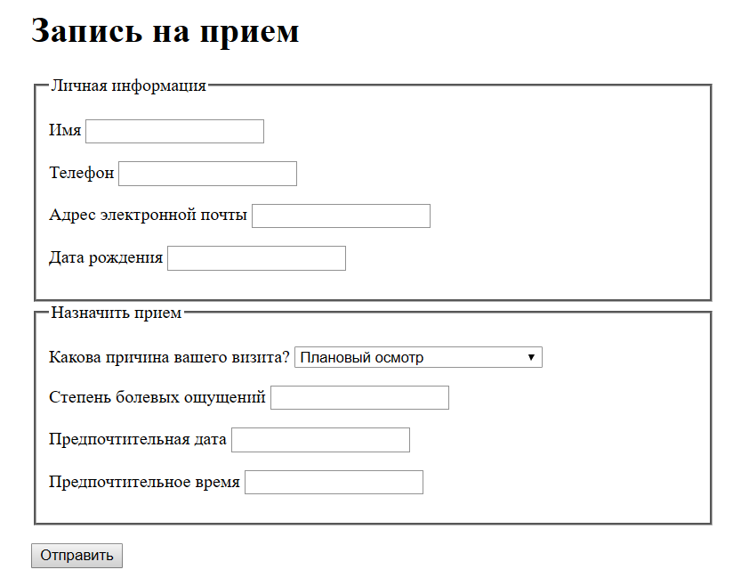

Обзор, цель и назначение урока
Применение новых типов полей ввода - email, range, datetime, color, search; атрибутов - placeholder, autofocus.
Установить различия между кодеками и видеоконтейнерами.
Определить поддержку новых тегов различными версиями современных браузеров.
Научиться встраивать аудио и видео на страницы согласно новой спецификации.
Способы построения интефейса встроенного видеофайла.
-
Создайте страницу, разместите на ней видеоплеер (640х640), сделайте разметку согласно семантике HTML5, укажите несколько источников в source. Видео должно проигрываться в IE.
-
Сделайте форму по типу документа «001 Simple Form.html» согласно спецификации HTML5: 